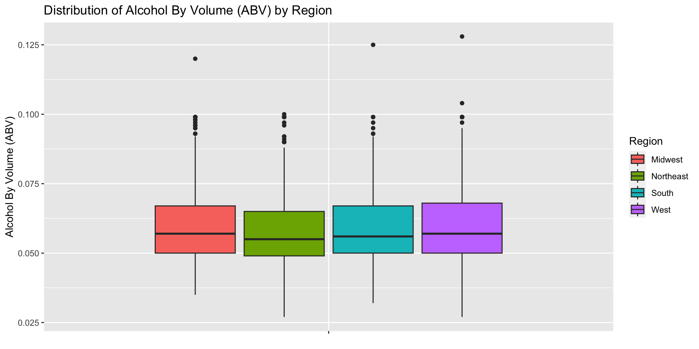

This is an R Markdown document. Markdown is a simple formatting syntax for authoring HTML, PDF, and MS Word documents. For more details on using R Markdown see http://rmarkdown.rstudio.com.
When you click the Knit button a document will be generated that includes both content as well as the output of any embedded R code chunks within the document. You can embed an R code chunk like this:
library(tidyverse)## ── Attaching core tidyverse packages ──────────────────────── tidyverse 2.0.0 ──
## ✔ dplyr 1.1.4 ✔ readr 2.1.4
## ✔ forcats 1.0.0 ✔ stringr 1.5.1
## ✔ ggplot2 3.4.4 ✔ tibble 3.2.1
## ✔ lubridate 1.9.3 ✔ tidyr 1.3.0
## ✔ purrr 1.0.2
## ── Conflicts ────────────────────────────────────────── tidyverse_conflicts() ──
## ✖ dplyr::filter() masks stats::filter()
## ✖ dplyr::lag() masks stats::lag()
## ℹ Use the conflicted package (<http://conflicted.r-lib.org/>) to force all conflicts to become errorslibrary(dplyr)
library(stringr)
library(ggplot2)
#connecting to the dataset - beer and breweries dataset provided for this project
beers <- read.csv("Beers.csv", header= TRUE)
breweries <- read.csv("Breweries.csv", header= TRUE)
#check data
head(beers)## Name Beer_ID ABV IBU Brewery_id
## 1 Pub Beer 1436 0.050 NA 409
## 2 Devil's Cup 2265 0.066 NA 178
## 3 Rise of the Phoenix 2264 0.071 NA 178
## 4 Sinister 2263 0.090 NA 178
## 5 Sex and Candy 2262 0.075 NA 178
## 6 Black Exodus 2261 0.077 NA 178
## Style Ounces
## 1 American Pale Lager 12
## 2 American Pale Ale (APA) 12
## 3 American IPA 12
## 4 American Double / Imperial IPA 12
## 5 American IPA 12
## 6 Oatmeal Stout 12head(breweries)## Brew_ID Name City State
## 1 1 NorthGate Brewing Minneapolis MN
## 2 2 Against the Grain Brewery Louisville KY
## 3 3 Jack's Abby Craft Lagers Framingham MA
## 4 4 Mike Hess Brewing Company San Diego CA
## 5 5 Fort Point Beer Company San Francisco CA
## 6 6 COAST Brewing Company Charleston SC#create data frames to answer questions
dfbeer = data.frame(BeerName = beers$Name,Beer_ID = beers$Beer_ID,ABV= beers$ABV,IBU = beers$IBU, Brew_ID = beers$Brewery_id, Style = beers$Style, Ounces = beers$Ounces)
dfbrewery = data.frame(Brew_ID = breweries$Brew_ID,BreweryName = breweries$Name,City= breweries$City,State = breweries$State)
#check data
head(dfbeer)## BeerName Beer_ID ABV IBU Brew_ID Style
## 1 Pub Beer 1436 0.050 NA 409 American Pale Lager
## 2 Devil's Cup 2265 0.066 NA 178 American Pale Ale (APA)
## 3 Rise of the Phoenix 2264 0.071 NA 178 American IPA
## 4 Sinister 2263 0.090 NA 178 American Double / Imperial IPA
## 5 Sex and Candy 2262 0.075 NA 178 American IPA
## 6 Black Exodus 2261 0.077 NA 178 Oatmeal Stout
## Ounces
## 1 12
## 2 12
## 3 12
## 4 12
## 5 12
## 6 12head(dfbrewery)## Brew_ID BreweryName City State
## 1 1 NorthGate Brewing Minneapolis MN
## 2 2 Against the Grain Brewery Louisville KY
## 3 3 Jack's Abby Craft Lagers Framingham MA
## 4 4 Mike Hess Brewing Company San Diego CA
## 5 5 Fort Point Beer Company San Francisco CA
## 6 6 COAST Brewing Company Charleston SC#merge datasets -
dfcombined <- merge(dfbeer,dfbrewery,"Brew_ID")
#check data
head(dfcombined)## Brew_ID BeerName Beer_ID ABV IBU Style
## 1 1 Get Together 2692 0.045 50 American IPA
## 2 1 Maggie's Leap 2691 0.049 26 Milk / Sweet Stout
## 3 1 Wall's End 2690 0.048 19 English Brown Ale
## 4 1 Pumpion 2689 0.060 38 Pumpkin Ale
## 5 1 Stronghold 2688 0.060 25 American Porter
## 6 1 Parapet ESB 2687 0.056 47 Extra Special / Strong Bitter (ESB)
## Ounces BreweryName City State
## 1 16 NorthGate Brewing Minneapolis MN
## 2 16 NorthGate Brewing Minneapolis MN
## 3 16 NorthGate Brewing Minneapolis MN
## 4 16 NorthGate Brewing Minneapolis MN
## 5 16 NorthGate Brewing Minneapolis MN
## 6 16 NorthGate Brewing Minneapolis MN#Question 1 - How many breweries are present in each state?
# Create a bar plot showing the count of breweries in each state
library(ggplot2)
ggplot(dfbrewery, aes(x = State)) +
geom_bar() +
labs(x = "State", y = "Number of Breweries", title = "Number of Breweries in Each State")#Question 2 Merge beer data with the breweries data. Print the first 6 observations and the last six observations to check the merged file.
#first 6 observations
first_6_rows <- head(dfcombined,6)
print(first_6_rows)## Brew_ID BeerName Beer_ID ABV IBU Style
## 1 1 Get Together 2692 0.045 50 American IPA
## 2 1 Maggie's Leap 2691 0.049 26 Milk / Sweet Stout
## 3 1 Wall's End 2690 0.048 19 English Brown Ale
## 4 1 Pumpion 2689 0.060 38 Pumpkin Ale
## 5 1 Stronghold 2688 0.060 25 American Porter
## 6 1 Parapet ESB 2687 0.056 47 Extra Special / Strong Bitter (ESB)
## Ounces BreweryName City State
## 1 16 NorthGate Brewing Minneapolis MN
## 2 16 NorthGate Brewing Minneapolis MN
## 3 16 NorthGate Brewing Minneapolis MN
## 4 16 NorthGate Brewing Minneapolis MN
## 5 16 NorthGate Brewing Minneapolis MN
## 6 16 NorthGate Brewing Minneapolis MN#last 6 observations
last_6_rows <- dfcombined[(nrow(dfcombined) - 5):nrow(dfcombined), ]
print(last_6_rows)## Brew_ID BeerName Beer_ID ABV IBU
## 2405 556 Pilsner Ukiah 98 0.055 NA
## 2406 557 Heinnieweisse Weissebier 52 0.049 NA
## 2407 557 Snapperhead IPA 51 0.068 NA
## 2408 557 Moo Thunder Stout 50 0.049 NA
## 2409 557 Porkslap Pale Ale 49 0.043 NA
## 2410 558 Urban Wilderness Pale Ale 30 0.049 NA
## Style Ounces BreweryName City
## 2405 German Pilsener 12 Ukiah Brewing Company Ukiah
## 2406 Hefeweizen 12 Butternuts Beer and Ale Garrattsville
## 2407 American IPA 12 Butternuts Beer and Ale Garrattsville
## 2408 Milk / Sweet Stout 12 Butternuts Beer and Ale Garrattsville
## 2409 American Pale Ale (APA) 12 Butternuts Beer and Ale Garrattsville
## 2410 English Pale Ale 12 Sleeping Lady Brewing Company Anchorage
## State
## 2405 CA
## 2406 NY
## 2407 NY
## 2408 NY
## 2409 NY
## 2410 AK#managing missing values - ABV values are missing for 62 of the 2,405 rows and IBU values are missing for 1,005 of 2,410 rows. The ABV values look like there are missing completely at random. While I can't find any evidence of "missing at random" or "not missing at random" for IBU values, my gut says I am not looking at all the angles. I made a called to calculate the mean and populate the missing data with mean values. This has been done for both ABV and IBU. All the below questions are answered based on this dataset.
# calculate mean for both variables at the Style level
library(dplyr)
dfcombined_Mean <- dfcombined %>%
group_by(Style) %>%
summarise(mean_ABV = mean(ABV, na.rm = TRUE),
mean_IBU = mean(IBU, na.rm = TRUE))
#populate NA values for ABV and IBU with mean values
# Merge dfcombined with dfcombined_Mean to get mean values for each style
dfcombined_updated <- dfcombined %>%
left_join(dfcombined_Mean, by = "Style")
# Replace NA values in ABV and IBU columns with corresponding mean values
dfcombined_updated$ABV[is.na(dfcombined_updated$ABV)] <- dfcombined_updated$mean_ABV[is.na(dfcombined_updated$ABV)]
dfcombined_updated$IBU[is.na(dfcombined_updated$IBU)] <- dfcombined_updated$mean_IBU[is.na(dfcombined_updated$IBU)]
# Remove unnecessary columns (mean_ABV, mean_IBU)
dfcombined_updated <- dfcombined_updated %>%
select(-mean_ABV, -mean_IBU)
# Print rows where IBU or ABV is NA
dim(dfcombined_updated %>% filter(is.na(IBU) | is.na(ABV)))## [1] 52 10# there are 52 rows where none of the IBU values for that Style was populated. Hence we couldn't replace the NA with mean values. These were removed from the dataset for the below questions.
#Question 4 - Compute the median alcohol content and international bitterness unit for each state. Plot a bar chart to compare.
# Remove NA values from ABV and IBU columns
dfcombined_clean <- dfcombined[!is.na(dfcombined$ABV) & !is.na(dfcombined$IBU), ]
dfcombined_updated_clean <- dfcombined_updated[!is.na(dfcombined_updated$ABV) & !is.na(dfcombined_updated$IBU), ]
#check data
dim(dfcombined)## [1] 2410 10dim(dfcombined_clean)## [1] 1405 10dim(dfcombined_updated)## [1] 2410 10dim(dfcombined_updated_clean)## [1] 2358 10# Calculate median ABV and median IBU for each state
medians_by_state <- dfcombined_updated_clean %>%
group_by(State) %>%
summarise(Median_ABV = median(ABV), Median_IBU = median(IBU, na.rm = TRUE))
Overall_Median <- median(medians_by_state$Median_ABV)
Overall_Median_I <- median(medians_by_state$Median_IBU)
# check data
head(medians_by_state,10)## # A tibble: 10 × 3
## State Median_ABV Median_IBU
## <chr> <dbl> <dbl>
## 1 " AK" 0.056 33.8
## 2 " AL" 0.06 39.5
## 3 " AR" 0.052 36.3
## 4 " AZ" 0.0575 22.2
## 5 " CA" 0.058 40
## 6 " CO" 0.06 36.3
## 7 " CT" 0.06 36.3
## 8 " DC" 0.0625 28.1
## 9 " DE" 0.0598 59.8
## 10 " FL" 0.0555 35.6#plot the median values
bar1 <- ggplot(medians_by_state, aes(x = State, y = Median_ABV)) + # Move aes() inside ggplot()
geom_col(fill = 'blue') +
labs(x = "State", y = "Median ABV", title = "Median Alcohol by Volume of Beers in Each State") +
theme(
plot.title = element_text(size = 20),
axis.text.x = element_text(angle = 45, hjust = 1),
axis.text.y = element_text(size = 12),
axis.title = element_text(size = 14)
) +
geom_hline(yintercept = Overall_Median, color = "red") # Add a horizontal line for overall median
bar2 = ggplot(medians_by_state, aes(x = State, y = Median_IBU)) +
geom_col(fill = 'green') +
labs(x = "State", y = "Median IBU", title = "Median International Bitterness Unit of Beers in Each State") +
theme(
plot.title = element_text(size = 20),
axis.text.x = element_text(angle = 45, hjust = 1),
axis.text.y = element_text(size = 12),
axis.title = element_text(size = 14)
) +
geom_hline(yintercept = Overall_Median_I, color = "red") # Add a horizontal line for overall median
#display both plots
library(patchwork)
bar1 / bar2#Question 5 - Which state has the maximum alcoholic (ABV) beer? Which state has the most bitter (IBU) beer?
#state with maximum alcoholic beer
max_abv <- max(dfcombined_updated_clean$ABV, na.rm = TRUE)
max_abv_index <- which.max(dfcombined_updated_clean$ABV)
state_with_max_abv <- dfcombined_updated_clean$State[max_abv_index]
print(state_with_max_abv)## [1] " CO"cat("State with maximum alcohol by volume beer is :",state_with_max_abv, "with ABV of",max_abv,"\n")## State with maximum alcohol by volume beer is : CO with ABV of 0.128#state with most bitter beer
max_ibu <- max(dfcombined_updated_clean$IBU,na.rm = TRUE)
max_ibu_index <- which.max(dfcombined_updated_clean$IBU)
state_with_max_ibu <- dfcombined_updated_clean$State[max_ibu_index]
print(state_with_max_ibu)## [1] " OR"cat("State with most bitter beer is :",state_with_max_ibu, "with IBU of",max_ibu,"\n")## State with most bitter beer is : OR with IBU of 138#Question 6 - Comment on the summary statistics and distribution of the ABV variable.
#create a new region column
midwest <- c( "IA","IL", "IN", "KS", "MI", "MN", "MO", "ND","NE", "OH", "SD", "WI")
northeast <- c("CT","MA", "ME", "NH", "NJ", "NY", "PA", "RI", "VT")
south <- c("AL","AR","DC","DE","FL","GA","KY","LA","MD","MS","NC","OK","SC","TN","TX","VA","WV")
west <- c("AK","AZ","CA","CO","HI","ID","MT","NM","NV","OR","UT","WA","WY")
# Clean the State column to remove leading and trailing whitespace
dfcombined_updated_clean$State <- trimws(dfcombined_updated_clean$State)
# Create a new column named "Region" and assign the region based on state
dfcombined_updated_clean$Region <- ifelse(dfcombined_updated_clean$State %in% midwest, "Midwest",
ifelse(dfcombined_updated_clean$State %in% northeast, "Northeast",
ifelse(dfcombined_updated_clean$State %in% south, "South",
ifelse(dfcombined_updated_clean$State %in% west, "West", "Unknown"))))
# Calculate summary statistics
ABV <- dfcombined_updated_clean$ABV
mean_ABV <- mean(ABV, na.rm = TRUE) # Mean
median_ABV <- median(ABV, na.rm = TRUE) # Median
min_ABV <- min(ABV, na.rm = TRUE) # Minimum
max_ABV <- max(ABV, na.rm = TRUE) # Maximum
q1_ABV <- quantile(ABV, probs = 0.25, na.rm = TRUE) # First quartile (25th percentile)
q3_ABV <- quantile(ABV, probs = 0.75, na.rm = TRUE) # Third quartile (75th percentile)
# Print summary statistics
cat("Mean ABV:", mean_ABV, "\n")## Mean ABV: 0.05972379cat("Median ABV:", median_ABV, "\n")## Median ABV: 0.056cat("Minimum ABV:", min_ABV, "\n")## Minimum ABV: 0.027cat("Maximum ABV:", max_ABV, "\n")## Maximum ABV: 0.128cat("First Quartile ABV:", q1_ABV, "\n")## First Quartile ABV: 0.05cat("Third Quartile ABV:", q3_ABV, "\n")## Third Quartile ABV: 0.067#distribution
ggplot(dfcombined_updated_clean,aes(x=ABV)) +
geom_histogram()## `stat_bin()` using `bins = 30`. Pick better value with `binwidth`.#using another way
hist(ABV, main = "Distribution of Alcohol By Volume (ABV)", xlab = "ABV", ylab = "Frequency")
# Add summary statistics to the plot
abline(v = mean_ABV, col = "red", lwd = 2) # Mean line
abline(v = median_ABV, col = "blue", lwd = 2) # Median line
legend("topright", legend = c("Mean", "Median"), col = c("red", "blue"), lwd = 2)#boxplot
# Box plot with color and labels
ggplot(dfcombined_updated_clean, aes(x = "", y = ABV, fill = Region)) +
geom_boxplot() +
labs(title = "Distribution of Alcohol By Volume (ABV) by Region", x = NULL, y = "Alcohol By Volume (ABV)", fill = "Region")
#summary statement
"The summary statistics for the ABV variable show that the mean alcohol by volume is 5.9%, with a median of 5.7%. The range of ABV values extends from 2.7% to 12.5%, with 5% as the first quartile and 6.8% as the third quartile. The distribution of ABV values appears to be right-skewed, indicating that the majority of beers have lower alcohol content. However, there are some outliers with exceptionally high ABV values, which may represent specialty beers."## [1] "The summary statistics for the ABV variable show that the mean alcohol by volume is 5.9%, with a median of 5.7%. The range of ABV values extends from 2.7% to 12.5%, with 5% as the first quartile and 6.8% as the third quartile. The distribution of ABV values appears to be right-skewed, indicating that the majority of beers have lower alcohol content. However, there are some outliers with exceptionally high ABV values, which may represent specialty beers."#question 7 Is there an apparent relationship between the bitterness of the beer and its alcoholic content? Draw a scatter plot
#create a new region column
midwest <- c( "IA","IL", "IN", "KS", "MI", "MN", "MO", "ND","NE", "OH", "SD", "WI")
northeast <- c("CT","MA", "ME", "NH", "NJ", "NY", "PA", "RI", "VT")
south <- c("AL","AR","DC","DE","FL","GA","KY","LA","MD","MS","NC","OK","SC","TN","TX","VA","WV")
west <- c("AK","AZ","CA","CO","HI","ID","MT","NM","NV","OR","UT","WA","WY")
# Clean the State column to remove leading and trailing whitespace
dfcombined_updated_clean$State <- trimws(dfcombined_updated_clean$State)
# Create a new column named "Region" and assign the region based on state
dfcombined_updated_clean$Region <- ifelse(dfcombined_updated_clean$State %in% midwest, "Midwest",
ifelse(dfcombined_updated_clean$State %in% northeast, "Northeast",
ifelse(dfcombined_updated_clean$State %in% south, "South",
ifelse(dfcombined_updated_clean$State %in% west, "West", "Unknown"))))
# Check the data
unique(dfcombined_updated_clean$Region)## [1] "Midwest" "South" "Northeast" "West"head(dfcombined_updated_clean)## Brew_ID BeerName Beer_ID ABV IBU Style
## 1 1 Get Together 2692 0.045 50 American IPA
## 2 1 Maggie's Leap 2691 0.049 26 Milk / Sweet Stout
## 3 1 Wall's End 2690 0.048 19 English Brown Ale
## 4 1 Pumpion 2689 0.060 38 Pumpkin Ale
## 5 1 Stronghold 2688 0.060 25 American Porter
## 6 1 Parapet ESB 2687 0.056 47 Extra Special / Strong Bitter (ESB)
## Ounces BreweryName City State Region
## 1 16 NorthGate Brewing Minneapolis MN Midwest
## 2 16 NorthGate Brewing Minneapolis MN Midwest
## 3 16 NorthGate Brewing Minneapolis MN Midwest
## 4 16 NorthGate Brewing Minneapolis MN Midwest
## 5 16 NorthGate Brewing Minneapolis MN Midwest
## 6 16 NorthGate Brewing Minneapolis MN Midwest#draw scatterplot
dfcombined_updated_clean %>% select(State,Region,ABV,IBU) %>%
ggplot(aes(x= ABV, y= IBU,color = Region))+
geom_point()+labs(title = "Scatterplot of Alcohol by Volume Vs. International Bitterness Unit", x= "Alcohol by Volume", y= "International Bitterness Unit") #summary statement
"It looks like there is a slight positive association between Alcohol by Volume and International Bitterness Unit. While there is a general tendency for the bitterness to move in the same direction as alcohol by volume, there is also considerable variability around the trend line. Beers from all regions are represented in the variability around the trend line."## [1] "It looks like there is a slight positive association between Alcohol by Volume and International Bitterness Unit. While there is a general tendency for the bitterness to move in the same direction as alcohol by volume, there is also considerable variability around the trend line. Beers from all regions are represented in the variability around the trend line."#histogram by region for both IBU and ABV values
ABV <- dfcombined_updated_clean %>%
select(State, Region, ABV, IBU) %>%
ggplot(aes(x = ABV, fill = Region)) +
geom_histogram() +
labs(title = "Alcohol by Volume by region")
IBU <- dfcombined_updated_clean %>%
select(State, Region, ABV, IBU) %>%
ggplot(aes(x = IBU, fill = Region)) +
geom_histogram() +
labs(title = "IBU by region")
library(patchwork)
ABV / IBU## `stat_bin()` using `bins = 30`. Pick better value with `binwidth`.
## `stat_bin()` using `bins = 30`. Pick better value with `binwidth`.#histogram by region for ABV and IBU values in facet wrap style
dfcombined_updated_clean %>%
select(State, Region, ABV, IBU) %>%
ggplot(aes(x = ABV, fill = Region)) +
geom_histogram() +
labs(title = "Alcohol by Volume by region") +
facet_wrap(~Region)## `stat_bin()` using `bins = 30`. Pick better value with `binwidth`.dfcombined_updated_clean %>%
select(State, Region, ABV, IBU) %>%
ggplot(aes(x = IBU, fill = Region)) +
geom_histogram() +
labs(title = "IBU by region") +
facet_wrap(~Region)## `stat_bin()` using `bins = 30`. Pick better value with `binwidth`.#question 9 - use knn to explore relationship of ABV & IBU between IPA and other Ales
#creating a data frame with styles of IPA and "ale" in the name
library(dplyr)
library(stringr)
# Filter rows where the Style column contains "IPA" or "Ale"
dfIPA_Ale <- dfcombined_updated_clean %>%
filter(str_detect(Style, "IPA") | grepl("\\bAle\\b", Style))
# View the filtered data
head(dfIPA_Ale)## Brew_ID BeerName Beer_ID ABV IBU Style
## 1 1 Get Together 2692 0.045 50 American IPA
## 2 1 Wall's End 2690 0.048 19 English Brown Ale
## 3 1 Pumpion 2689 0.060 38 Pumpkin Ale
## 4 2 Citra Ass Down 2686 0.080 68 American Double / Imperial IPA
## 5 2 A Beer 2683 0.042 42 American Pale Ale (APA)
## 6 2 Flesh Gourd'n 2681 0.066 21 Pumpkin Ale
## Ounces BreweryName City State Region
## 1 16 NorthGate Brewing Minneapolis MN Midwest
## 2 16 NorthGate Brewing Minneapolis MN Midwest
## 3 16 NorthGate Brewing Minneapolis MN Midwest
## 4 16 Against the Grain Brewery Louisville KY South
## 5 16 Against the Grain Brewery Louisville KY South
## 6 16 Against the Grain Brewery Louisville KY Southdim(dfIPA_Ale)## [1] 1533 11dim(dfcombined_updated_clean)## [1] 2358 11# Add a Type column to differentiate IPA from other Ales
dfIPA_Ale$Type <- ifelse(str_detect(dfIPA_Ale$Style, "IPA"), "IPA", "Ale")
#check data
head(dfIPA_Ale)## Brew_ID BeerName Beer_ID ABV IBU Style
## 1 1 Get Together 2692 0.045 50 American IPA
## 2 1 Wall's End 2690 0.048 19 English Brown Ale
## 3 1 Pumpion 2689 0.060 38 Pumpkin Ale
## 4 2 Citra Ass Down 2686 0.080 68 American Double / Imperial IPA
## 5 2 A Beer 2683 0.042 42 American Pale Ale (APA)
## 6 2 Flesh Gourd'n 2681 0.066 21 Pumpkin Ale
## Ounces BreweryName City State Region Type
## 1 16 NorthGate Brewing Minneapolis MN Midwest IPA
## 2 16 NorthGate Brewing Minneapolis MN Midwest Ale
## 3 16 NorthGate Brewing Minneapolis MN Midwest Ale
## 4 16 Against the Grain Brewery Louisville KY South IPA
## 5 16 Against the Grain Brewery Louisville KY South Ale
## 6 16 Against the Grain Brewery Louisville KY South Ale# draw scatterplot
dfIPA_Ale %>%
select(State, Region, Type, ABV, IBU) %>%
ggplot(aes(x = ABV, y = IBU, color = Type)) +
geom_point() +
labs(
title = "Scatterplot of Alcohol by Volume Vs. International Bitterness Unit",
x = "Alcohol by Volume",
y = "International Bitterness Unit"
)# draw scatterplot by region
dfIPA_Ale %>%
select(State, Region, Type, ABV, IBU) %>%
ggplot(aes(x = ABV, y = IBU, color = Type)) +
geom_point() +
labs(
title = "Scatterplot of Alcohol by Volume Vs. International Bitterness Unit",
x = "Alcohol by Volume",
y = "International Bitterness Unit"
)+
facet_wrap(~Region)#training and test datasets - knn classification
library(class)
library(caret)## Loading required package: lattice
##
## Attaching package: 'caret'
##
## The following object is masked from 'package:purrr':
##
## liftlibrary(e1071)
library(dplyr)
set.seed(6)
splitPerc = .7
trainIndices = sample(1:dim(dfIPA_Ale)[1],round(splitPerc * dim(dfIPA_Ale)[1]))
train = dfIPA_Ale[trainIndices,]
test = dfIPA_Ale[-trainIndices,]
#check data
nrow(train)## [1] 1073nrow(test)## [1] 460nrow(dfIPA_Ale)## [1] 1533# k = 5
classifications = knn(train[,c(4,5)],test[,c(4,5)],train$Type, prob = TRUE, k = 7)
table(classifications,test$Type)##
## classifications Ale IPA
## Ale 256 35
## IPA 22 147confusionMatrix(table(classifications,test$Type), mode = "everything")## Confusion Matrix and Statistics
##
##
## classifications Ale IPA
## Ale 256 35
## IPA 22 147
##
## Accuracy : 0.8761
## 95% CI : (0.8425, 0.9048)
## No Information Rate : 0.6043
## P-Value [Acc > NIR] : <2e-16
##
## Kappa : 0.7377
##
## Mcnemar's Test P-Value : 0.112
##
## Sensitivity : 0.9209
## Specificity : 0.8077
## Pos Pred Value : 0.8797
## Neg Pred Value : 0.8698
## Precision : 0.8797
## Recall : 0.9209
## F1 : 0.8998
## Prevalence : 0.6043
## Detection Rate : 0.5565
## Detection Prevalence : 0.6326
## Balanced Accuracy : 0.8643
##
## 'Positive' Class : Ale
## #trying naive bayes
#Train a NB model based on the training set using ABV and IBU.
model = naiveBayes(train[,c(4,5)],train$Type)
#Use the model to predict the Type in the test set and use those results to evaluate the model based on accuracy, sensitivity and specificity.
table(predict(model,test[,c(4,5)]),test$Type)##
## Ale IPA
## Ale 243 34
## IPA 35 148confusionMatrix(table(predict(model,test[,c(4,5)]),test$Type), mode = "everything")## Confusion Matrix and Statistics
##
##
## Ale IPA
## Ale 243 34
## IPA 35 148
##
## Accuracy : 0.85
## 95% CI : (0.814, 0.8814)
## No Information Rate : 0.6043
## P-Value [Acc > NIR] : <2e-16
##
## Kappa : 0.6866
##
## Mcnemar's Test P-Value : 1
##
## Sensitivity : 0.8741
## Specificity : 0.8132
## Pos Pred Value : 0.8773
## Neg Pred Value : 0.8087
## Precision : 0.8773
## Recall : 0.8741
## F1 : 0.8757
## Prevalence : 0.6043
## Detection Rate : 0.5283
## Detection Prevalence : 0.6022
## Balanced Accuracy : 0.8436
##
## 'Positive' Class : Ale
## #bonus question - additional insights from the data
# Load necessary packages
library(ggplot2)
library(dplyr)
library(maps)##
## Attaching package: 'maps'
##
## The following object is masked from 'package:purrr':
##
## map# Create a mapping table for state abbreviations to full names
state_mapping <- data.frame(StateAbbrev = c("AL", "AK", "AZ", "AR", "CA", "CO", "CT", "DE", "FL", "GA",
"HI", "ID", "IL", "IN", "IA", "KS", "KY", "LA", "ME", "MD",
"MA", "MI", "MN", "MS", "MO", "MT", "NE", "NV", "NH", "NJ",
"NM", "NY", "NC", "ND", "OH", "OK", "OR", "PA", "RI", "SC",
"SD", "TN", "TX", "UT", "VT", "VA", "WA", "WV", "WI", "WY"),
StateFull = c("alabama", "alaska", "arizona", "arkansas", "california", "colorado",
"connecticut", "delaware", "florida", "georgia", "hawaii", "idaho",
"illinois", "indiana", "iowa", "kansas", "kentucky", "louisiana",
"maine", "maryland", "massachusetts", "michigan", "minnesota",
"mississippi", "missouri", "montana", "nebraska", "nevada",
"new hampshire", "new jersey", "new mexico", "new york", "north carolina",
"north dakota", "ohio", "oklahoma", "oregon", "pennsylvania",
"rhode island", "south carolina", "south dakota", "tennessee",
"texas", "utah", "vermont", "virginia", "washington", "west virginia",
"wisconsin", "wyoming"))
# Merge the mapping table with your data frame to get full state names
dfcombined_updated_clean <- merge(dfcombined_updated_clean, state_mapping, by.x = "State", by.y = "StateAbbrev")
# Aggregate the number of beers available by state
state_beer_data <- dfcombined_updated_clean %>%
group_by(StateFull) %>%
summarise(TotalBeersAvailable = n())
# Load US map data
us_map <- map_data("state")
# Merge your aggregated data with map data
merged_data <- merge(us_map, state_beer_data, by.x = "region", by.y = "StateFull", all.x = TRUE)
# Plot the map
ggplot() +
geom_map(data = merged_data, map = merged_data,
aes(x = long, y = lat, map_id = region, fill = TotalBeersAvailable),
color = "black", size = 0.15) +
scale_fill_gradient(low = "lightblue", high = "darkblue", na.value = "grey") + # Adjust color gradient
labs(title = "Number of beer choices by State",fill = "Total Beers Available") + # Label legend
coord_fixed(1.3) + # Adjust aspect ratio
theme_void() # Remove axis and grid lines## Warning: Using `size` aesthetic for lines was deprecated in ggplot2 3.4.0.
## ℹ Please use `linewidth` instead.
## This warning is displayed once every 8 hours.
## Call `lifecycle::last_lifecycle_warnings()` to see where this warning was
## generated.## Warning in geom_map(data = merged_data, map = merged_data, aes(x = long, :
## Ignoring unknown aesthetics: x and y#bonus question - most popular ounces
#plot bar
# Aggregate the number of beers available by Ounces
Ounce_data <- dfcombined_updated_clean %>%
group_by(Ounces) %>%
summarise(TotalBeersAvailable = n())
# Plot the bar graph
ggplot(Ounce_data, aes(x = Ounces, y = TotalBeersAvailable)) +
geom_col(show.legend = FALSE, fill = "brown") +
labs(title = "Number of beers by ounce packaging")